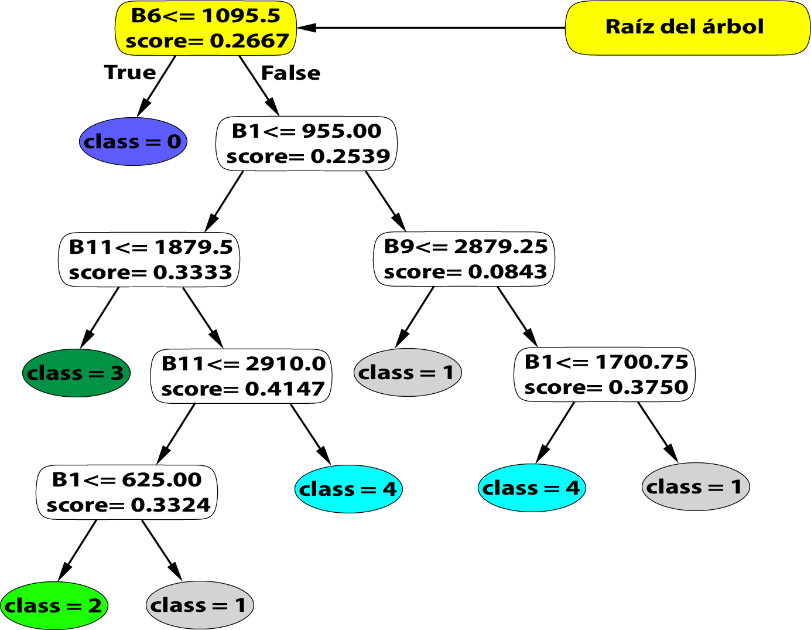

Aplicando Máquina de Soporte Vectorial y Árboles de Decisión#
Introducción#
Propiciar la incorporación enfoques innovadores y paradigmas de ciencias de dato para maximizar la gestión, análisis y aprovechamiento de la información geoespacial, fomentando el uso de tecnologías emergentes, inteligencia artificial y modelos analíticos avanzados que optimicen la toma de decisiones y potencien el desarrollo de soluciones estratégicas en todos los niveles de gobierno y sectores involucrados.
En este capítulo exploraremos el uso de dos técnicas de aprendizaje automático para clasificación supervisada multiclase en Google Earth Engine. Aplicaremos Maquina de Soporte Vectorial: SVM (Support Vector Machine) y Arboles de Decisión.
Máquina de soporte vectorial.#
En un capítulo anterior utilizamos Random Forest para clasificar imágenes de Sentinel-2 en el área metropolitana de Rosario, para ello creamos el script GEE: Lab_002_RandomForest_Rosario.
Accederemos a dicho script y guardaremos una copia del mismo, que renombraremos a Lab_003_SVM_Rosario.
Para aplicar Maquinas de soporte vectorial, el flujo de trabajo es el mismo que utilizamos RF, con excepción de que en lugar de utilizar un clasificador de Random Forest, utilizaremos un clasificador de Maquina de Soporte Vectorial. En otras palabras, el cambio principal está en la etapa de entrenamiento del clasificador.
Antes usábamos ee.Classifier.smileRandomForest(100), ahora utilizamos ee.Classifier.libsvm(). Libsvm significa “a library por support vector machine”.
¿Qué es SVM? Es un clasificador que busca encontrar un hiperplano óptimo que separe los datos en clases. (esto fue explicado en el capítulo anterior)
Luego de este, cambio no hay nada mas que hacer para obtener la clasificación, simplemente guardar y volver a ejecutar.
Realizamos una evaluación de la exactitud, incluyendo la matriz de confusión. Obtenemos métricas de productor y consumidor y el coeficiente de Kappa, como en el script anterior.
SVM es ideal para escenarios donde las clases no están claramente separadas linealmente. GEE es una poderosa herramienta para el análisis de datos espaciales y la clasificación de imágenes satelitales, Sin embargo, hay ciertas limitaciones cuando trabajamos con algoritmos como SVM. Por ejemplo GEE no esta diseñado para visualizar los hiperplanos que separan las clases en una clasificación. Esto se debe a que el enfoque principal de GEE es el procesamiento y el analisis de datos espaciales no la visualizacion detallada de los resultados matematicos de los modelos de ML.
Ademas cuando aplicamos una clasificacion multiclase, como en el caso de un problema con 5 clases, el uso de SVM puede tornarse un tanto engorroso. Esto se debe a que SVM manejan las clasificaciones multiclase dividiendolas en multiples problemas de clasificiones binarias. Lo que aumenta la complejida del modelo y su interpretación. Si bien GEE puede efectuar la clasificacion y devolver el mapa resultante, no proporcionará una visualización clara de como se generan o estructuran estos hiperplanos en el espacio de características.
GEE (JavaScript)
var s2 = ee.ImageCollection("COPERNICUS/S2_SR_HARMONIZED");
var filtered = s2
.filter(ee.Filter.lt('CLOUDY_PIXEL_PERCENTAGE', 30))
.filter(ee.Filter.date('2024-01-01', '2025-01-01'))
.filter(ee.Filter.bounds(roi))
.select('B.*');
var composite = filtered.median().clip(roi);
var rgbVisParams = {
min: 0.0,
max: 3000,
bands: ['B4','B3','B2']
}
Map.addLayer(composite, rgbVisParams, 'roi: región de interés');
Map.centerObject(roi, 10);
// TRAINING DATA:
// Crear FeatureCollections para
// agua con propiedad landcover = 0
// urbano con propiedad landcover = 1
// cultivos con propiedad landcover = 2
// bosque con propiedad landcover = 3
// terrenoDesnudo con propiedad landcover = 4
// Merge Training Samples
// definir una variable gcps: ground control points
var gcps = urbano.merge(agua).merge(cultivos).merge(terrenoDesnudo).merge(bosque);
print(gcps.size());
// Training fraction 60%
// Validation Fraction 40%
// Asignar un numero random entre 0 y 1
var gcp = gcps.randomColumn();
var trainingGCP = gcp.filter(ee.Filter.lt('random', 0.6));
var validationGCP = gcp.filter(ee.Filter.gte('random', 0.6));
// print(trainingGCP.size());
// print(validationGCP.size());
// Extract the pixel values
var training = composite.sampleRegions({
collection: trainingGCP,
properties: ['landcover'],
scale: 10,
tileScale: 16
});
print(training);
//print('Training data:', training.limit(10));
// Agregar propiedades explícitas al training si es necesario
var trainingWithBands = training.map(function(feature) {
return feature.set({
B1: feature.get('B1'),
B2: feature.get('B2'),
B3: feature.get('B3'),
B4: feature.get('B4'),
B5: feature.get('B5'),
B6: feature.get('B6'),
B7: feature.get('B7'),
B8: feature.get('B8'),
B8A: feature.get('B8A'),
B9: feature.get('B9'),
B11: feature.get('B11'),
B12: feature.get('B12'),
landcover: feature.get('landcover')
});
});
// Exportar los datos a Google Drive
Export.table.toDrive({
collection: trainingWithBands,
description: 'Training_Data2',
fileFormat: 'CSV'
});
// TRAIN A CLASSIFIER
var classifier = ee.Classifier.libsvm().train({
features: training,
classProperty: 'landcover',
inputProperties: composite.bandNames()
});
// CLASSIFY THE IMAGE
var classified = composite.classify(classifier);
// Display the image
var classVis = {
min: 0,
max: 4,
palette: ['blue', 'gray', 'green', 'violet', 'orange']
}
Map.addLayer(classified.clip(roi), classVis, 'Imagen Clasificada');
// ACCURACY ASSESSMENT
var test = classified.sampleRegions({
collection: validationGCP,
properties: ['landcover'],
scale: 10
});
// print(test);
var testConfusionMatrix = test.errorMatrix('landcover', 'classification');
print('Confusion Matrix', testConfusionMatrix);
print('Test Accuracy', testConfusionMatrix.accuracy());
print('Producers Accuracy:', testConfusionMatrix.producersAccuracy() );
print('Consumers Accuracy:', testConfusionMatrix.consumersAccuracy() );
Arbol de Decisión#
Ahora guardaremos nuevamente este script con otro nombre: Lab_004_DT_Rosario. DT son las siglas de árbol de decisión o decision tree.
Para aplicar esta técnica necesitamos cambiar el clasificador, borraremos el clasificador libsvm() y lo reemplazaremos por smileCart()
Es decir, ahora usamos ee.Classifier.smileCart() para aplicar un árbol de decisión. Como lo indica su documentación CART significa ´Clasification and Regression Tree Árbol de Regresión y Clasificación
¿Qué es un árbol de decisión? Es un modelo jerárquico que divide los datos en función de preguntas simples o nodos decisión, también llamadas condiciones, para clasificar cada pixel.
Ventajas y aplicaciones: Es fácil de interpretar y útil para entender cómo se toman las decisiones de clasificación. Extraemos las reglas del árbol con el comando classifier.explain(), que nos permite visualizar las condiciones utilizadas para clasificar.
Calculamos su precsión 98.02 por ciento. Ahora agregaremo código para obtener las reglas del árbol de decisión entrenado, y para mostrar las reglas del árbol.
Como mencionamos en el video 2 de esta serie, el árbol de decisión es útil porque condensa la información del modelo entrenado.
GEE (JavaScript)
var s2 = ee.ImageCollection("COPERNICUS/S2_SR_HARMONIZED");
var filtered = s2
.filter(ee.Filter.lt('CLOUDY_PIXEL_PERCENTAGE', 30))
.filter(ee.Filter.date('2024-01-01', '2025-01-01'))
.filter(ee.Filter.bounds(roi))
.select('B.*');
var composite = filtered.median().clip(roi);
var rgbVisParams = {
min: 0.0,
max: 3000,
bands: ['B4','B3','B2']
}
Map.addLayer(composite, rgbVisParams, 'roi: región de interés');
Map.centerObject(roi, 10);
// TRAINING DATA:
// Crear FeatureCollections para
// agua con propiedad landcover = 0
// urbano con propiedad landcover = 1
// cultivos con propiedad landcover = 2
// bosque con propiedad landcover = 3
// terrenoDesnudo con propiedad landcover = 4
// Merge Training Samples
// definir una variable gcps: ground control points
var gcps = urbano.merge(agua).merge(cultivos).merge(terrenoDesnudo).merge(bosque);
print(gcps.size());
// Training fraction 60%
// Validation Fraction 40%
// Asignar un numero random entre 0 y 1
var gcp = gcps.randomColumn();
var trainingGCP = gcp.filter(ee.Filter.lt('random', 0.6));
var validationGCP = gcp.filter(ee.Filter.gte('random', 0.6));
// print(trainingGCP.size());
// print(validationGCP.size());
// Extract the pixel values
var training = composite.sampleRegions({
collection: trainingGCP,
properties: ['landcover'],
scale: 10,
tileScale: 16
});
print(training);
// TRAIN A CLASSIFIER
var classifier = ee.Classifier.smileCart().train({
features: training,
classProperty: 'landcover',
inputProperties: composite.bandNames()
});
// CLASSIFY THE IMAGE
var classified = composite.classify(classifier);
// Display the image
var classVis = {
min: 0,
max: 4,
palette: ['blue', 'gray', 'green', 'violet', 'orange']
}
Map.addLayer(classified.clip(roi), classVis, 'Imagen Clasificada');
// ACCURACY ASSESSMENT
var test = classified.sampleRegions({
collection: validationGCP,
properties: ['landcover'],
scale: 10
});
// print(test);
var testConfusionMatrix = test.errorMatrix('landcover', 'classification');
print('Confusion Matrix', testConfusionMatrix);
print('Test Accuracy', testConfusionMatrix.accuracy());
print('Producers Accuracy:', testConfusionMatrix.producersAccuracy() );
print('Consumers Accuracy:', testConfusionMatrix.consumersAccuracy() );
// Obtener las reglas del árbol de decisión entrenado
var treeRules = classifier.explain();
// Mostrar las reglas del árbol
print('Tree Rules:', treeRules);
// Contar píxeles válidos por banda
var pixelCount = composite.reduceRegion({
reducer: ee.Reducer.count(),
geometry: roi,
scale: 10, // Usar la escala correcta, en este caso utilizo Sentinel-2
maxPixels: 1e13
});
// Imprimir el resultado
print('Número total de píxeles válidos por banda:', pixelCount);
Gráfico del Arbol de decisión con Google Colab#
Las reglas del árbol se muestran en formato texto, copiaremos el archivo dot y abriremos un archivo nuevo en Google colab que nos permitirá dado el archivo dot, graficar el mismo y ver su formato árbol.
A continuación se muestra el código Python que permite graficar un árbol de decisión, dado el archivo .dot.
Colab (Python)
!apt-get install graphviz
!pip install graphviz
# Instalar dependencias adicionales para la conversión de PDF a imagen
!apt-get -qq install -y poppler-utils
!pip install pdf2image
# Importar las librerías necesarias
import graphviz
from google.colab import files
from pdf2image import convert_from_path
import matplotlib.pyplot as plt
# Definir las reglas del árbol de decisión en formato DOT
dot_data = """
digraph DecisionTree {
node [shape=box, style="filled, rounded", color="black", fontname=helvetica];
edge [fontname=helvetica];
0 [label=<B8 ≤ 891.5833<br/>score = 0.4998>, fillcolor="#00000000"];
1 [label=<class = 1>, fillcolor="#00000000", shape=ellipse];
0 -> 1 [labeldistance=2.5, labelangle=45, headlabel="True"];
2 [label=<class = 0>, fillcolor="#00000000", shape=ellipse];
0 -> 2 [labeldistance=2.5, labelangle=-45, headlabel="False"];
}
"""
# Crear el gráfico a partir del DOT
graph = graphviz.Source(dot_data)
# Renderizar el árbol de decisión en formato PDF
graph.render('decision_tree', format='pdf', cleanup=False)
# Convertir el PDF a imagen
images = convert_from_path('decision_tree.pdf')
# Mostrar la imagen del árbol de decisión
plt.imshow(images[0])
plt.axis('off') # Desactivar los ejes para que solo se vea la imagen
plt.show()
Cada vez que emplees árbol de decisión en GEE podrás utilizar este archivo colab para graficar el árbol del clasificador entrenado. Simplemente deberás modificar el archivo .dot, es decir modificar el contendio de la vairalbe dot_data y ejecutar cada chunk de código.
Enlace al archivo en Google Colab: https://colab.research.google.com/drive/1AdTW_jUPDzoIhBjeoGgWkSdsh1Ke6SLy?usp=sharing
Los árboles de decisión son una herramienta sencilla y poderosa, especialmente para tareas donde la interpretabilidad es importante. Comparados con Random Forest y SVM, ofrecen una estructura clara de cómo se toman las decisiones.
Ahora que hemos aplicado el algoritmo de aprendizaje automático de Arboles de Decisión al área metropolitana de Rosario, podemos analizar el árbol de decisión
Identificando los elementos del árbol de decisión#
Primero podemos identificar las principales partes de un árbol de decisión:
Este árbol tiene 7 nodos de decisión, donde cada nodo de decisión tiene una condición lógica o booleana “menor igual que”, basado en un umbral de las bandas.

Por ejemplo la raíz del árbol es el primer nodo situado en la parte superior:

Este nodo, el nodo raíz, tiene una condición: B6 <= 1095.0.
El árbol además de tener siete nodos de decisión cuenta con 8 hojas. Cada hoja representa una clasificación a una de las 5 clases de nuestra clasificación multiclase de Rosario.
Para clasificar una imagen satelital, una vez entrenado este clasificador de arbol de decisión CART, debemos tomar cada pixel y analizar la clase que le corresponde, es decir el árbol se aplica a cada pixel de la imagen satelital.
Hemos calculado la cantidad de pixel por banda con este código:
// Contar píxeles válidos por banda
var pixelCount = composite.reduceRegion({
reducer: ee.Reducer.count(),
geometry: roi,
scale: 10, // Asegúrate de usar la escala correcta
maxPixels: 1e13
});
// Imprimir el resultado
print('Número total de píxeles válidos por banda:', pixelCount);
Cada banda tiene un total de 22,600,300 píxeles válidos dentro de la región de interés (roi). Área total en m²: 2,260,030,000 m² (2,260 km² para 10 m de resolución).
Ejemplo de utilización del Árbol de Decisión#
Utilizaremos 5 puntos de entrenamiento de nuestra clasificación, uno para cada clase, de los cuales conocemos su clase (ya que son datos conocidos) y verificaremos que el árbol asocia correctamente a la clase correspondiente.
Para clasificar el píxel con los valores proporcionados, seguimos el árbol de decisión paso a paso utilizando las condiciones definidas en cada nodo.
En cada ejemplo, mostraremos el píxel al cual determinaremos la clase a la que corresponde. El video asociado a este script muestra el paso a paso de la evaluación mostrando:
a la izquierda el árbol de decisión,
a la derecha los valores de cada una de sus bandas.
Ejemplo 1 clase 0 agua#
El recorrido del arbol para clasificar este píxel es corto y consiste solo de una evaluación:
Condición: B6 ≤ 1095.5
B6: 521
Evaluación: 521 <= 1095.5 se evalúa a true, verdadero.
Seguimos por la rama true: La clase predicha para este píxel es clase 0.
Ejemplo 2 clase 1 urbano#
El recorrido consiste de tres evaluaciones:
Primera evaluación:
Condición: B6 <= 1095.5
B6: 2743
Evaluación: 2743 <= 1095.5 Falso
Segunda evaluación:
Condición: B1 <= 955.00
B1: 1153
Evaluación 1153 <= 955 falso
Tercera evaluación:
Condición: B9 <= 2879.25
B9: 2416
Evaluación: 2416 <= 2879.25 true
Seguimos por la rama true: La clase predicha para este píxel es clase 1.
Ejemplo 3 clase 2 cultivos#
El recorrido consiste de tres evaluaciones:
Primera evaluación:
Condición: B6 <= 1095.5
B6: 2751
Evaluación: 2751 <= 1095.5 falso
Condición: B1 <= 955.0
B1: 351
Evaluación: 351 <= 955 true, verdadero
Condición: B11 <= 1879.5
B11: 2579
Evalucion: 2579 <= 1879.5 false
Condición: B11 <= 2910.0
B11: 2579
Evaluación: 2579 <= 2910.0 true
Condición: B1 <= 625.00
B1: 351
Evalución: 351 <= 625.00 true ,
Seguimos por la rama true: La clase predicha para este píxel es clase 2.
Ejemplo 4 clase 3 bosque#
El recorrido consiste de tres evaluaciones:
Primera evaluación:
Condición: B6 <= 1095.5
B6: 2062
Evaluación: 2062 <= 1095.5 falso
Segunda evaluación:
Condición: B1 <= 955
B1: 159
Evaluación: 159 <= 955 verdaero
Tercera evaluación:
Condición: B11 <= 1879.5
B11: 1388
Evaluación: 1388 <= 1879.5, verdadero
Seguimos por la rama true: La clase predicha para este píxel es clase 3
Ejemplo 5 clase 4 suelo desnudo#
El recorrido consiste de cuatro evaluaciones:
Primera evaluación:
Condición: B6 <= 1095.5
B6: 3151
Evaluación: 3151 <= 1095.5 , falso.
Segunda evaluación:
Condición B1 <= 955
B1: 804
Evaluación: 804 <= 955 verdaero
Tercera evaluación:
Condición: B11 <= 1879.5
B11: 3756
Evaluación: 3756 <= 1879.5, falso
Cuarta evaluación:
Condición: B11 <= 2910.0
B11: es 3756
Evaluación: 3756 <= 2910, falso
Seguimos por la rama falso: La clase predicha para este píxel es clase 4.
Recursos#
Los recursos asociados a este capítulo incluyen:
Colab: https://colab.research.google.com/drive/1AdTW_jUPDzoIhBjeoGgWkSdsh1Ke6SLy?usp=sharing
Repositorio GEE: https://code.earthengine.google.com/?accept_repo=users%2Fcdg-idera%2Fgee
Scripts GEE: Lab_003_SVM_Rosario y Lab_004_DT_Rosario
Cierre e Incentivos#
Hemos explorado cómo aplicar técnicas de machine learning, una rama clave de la inteligencia artificial, para abordar la clasificación de imágenes satelitales, centrándonos en herramientas como árboles de decisión, Random Forest y máquinas de soporte vectorial (SVM). Estas técnicas permiten no solo clasificar imágenes en múltiples clases, sino también realizar tareas más específicas como clasificación binaria, generando insights valiosos para distintos campos. A lo largo de este recorrido, revisamos el flujo de trabajo completo, incorporando métricas esenciales como la precisión general, la precisión del productor y del consumidor, lo que refuerza nuestra capacidad de evaluar y mejorar la calidad de nuestros modelos.
Sin embargo, este es solo el comienzo de las posibilidades. Por ejemplo, el ajuste de hiperparámetros es una tarea crucial para optimizar el rendimiento de los clasificadores, y plataformas como Google Colab nos ofrecen un entorno accesible y potente para explorar estas técnicas con recursos computacionales avanzados. Además, conceptos como la detección de cambios o la creación de series de tiempo permiten un análisis mucho más dinámico y profundo. Estas herramientas son fundamentales para comprender fenómenos como el crecimiento urbano, la deforestación o los impactos de eventos extremos como inundaciones, mientras que los paneles interactivos, con barras deslizantes o comparaciones visuales, facilitan una mejor comunicación de resultados, haciéndolos accesibles para una audiencia más amplia.
En otras posibilidades, podemos analizar imágenes satelitales nocturnas, un recurso valioso para explorar patrones y actividades humanas que solo se manifiestan de noche, como la iluminación artificial en áreas urbanas. Las imágenes de luz nocturna proporcionan información relevante sobre la urbanización, el uso de la tierra y el desarrollo económico. A través de estas imágenes, es posible realizar estudios sobre la expansión urbana, monitorear el comportamiento de las actividades industriales o incluso analizar la distribución de la pobreza en diferentes regiones. De hecho, se ha demostrado que las luces nocturnas pueden ser un indicador confiable de la actividad económica y social, lo que abre nuevas oportunidades para aplicar machine learning y técnicas de clasificación en este tipo de datos.
Más allá de estas herramientas, también debemos reconocer el impacto de los productos globales que integran machine learning y sistemas expertos, como OpenBuilding V3, Global Surface Water, TerraClimate y otros conjuntos de datos clave. Estos productos no solo nos permiten realizar análisis geoespaciales detallados, sino que también simplifican tareas complejas, como el estudio de tendencias climáticas o la evaluación de la urbanización. Por ejemplo, Global Surface Water proporciona un monitoreo detallado de los cuerpos de agua desde 1984, mientras que TerraClimate facilita el análisis de variables climáticas a lo largo del tiempo. El uso de estos recursos combina el poder del aprendizaje automático con la democratización de datos geoespaciales, permitiendo a más personas y organizaciones participar en el análisis y toma de decisiones informadas.
Estamos en un momento histórico donde el acceso a imágenes satelitales y datos geoespaciales se ha expandido enormemente, abriendo la puerta a un futuro prometedor. La posibilidad de trabajar con imágenes de mayor resolución y precisión en un futuro cercano potenciará aún más las capacidades que estamos desarrollando ahora. Este enfoque progresivo y escalonado es clave: cada concepto y herramienta que integramos se convierte en un peldaño más en esta espiral de conocimiento, que nos permitirá abordar desafíos más complejos con confianza.
Finalmente, quiero invitarte a seguir profundizando en este fascinante campo en la intersección entre inteligencia artificial, ciencia de datos y análisis geoespacial. La democratización de las imágenes satelitales nos permite acceder a datos precisos y tangibles sobre la realidad del mundo que nos rodea, lo que transforma cómo entendemos y respondemos a los desafíos globales. Al trabajar con estos datos concretos, no solo aprendemos, sino que también tenemos la oportunidad de generar un impacto real en proyectos que afectan directamente nuestras comunidades y el entorno. Cada paso que damos nos acerca más a dominar estas herramientas poderosas, y eso, sin duda, nos abre un abanico de posibilidades para cambiar el mundo. ¡Lo mejor está por venir! Gracias por acompañarme en este viaje, y espero verte en el próximo video.